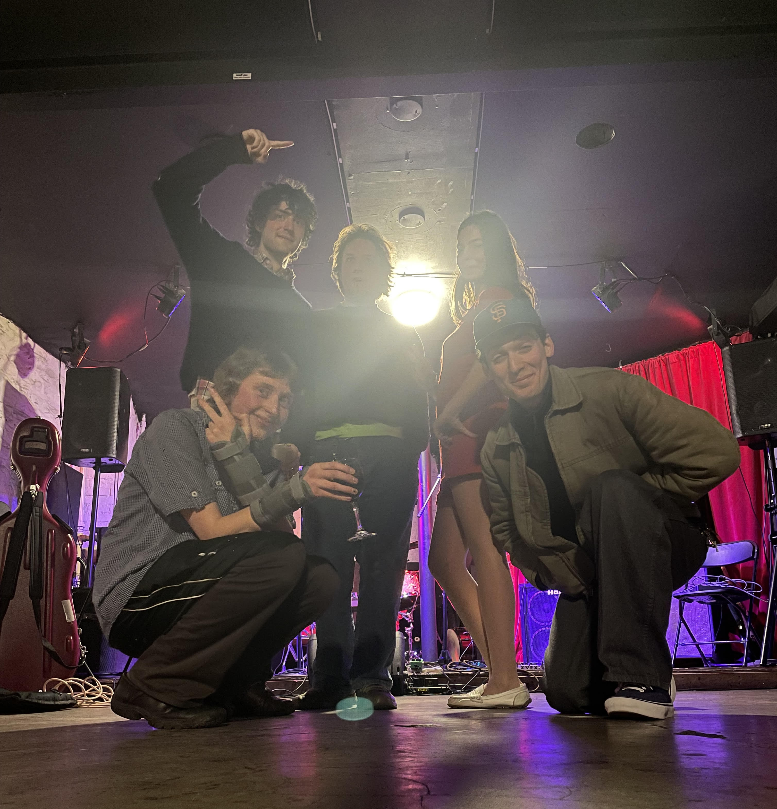
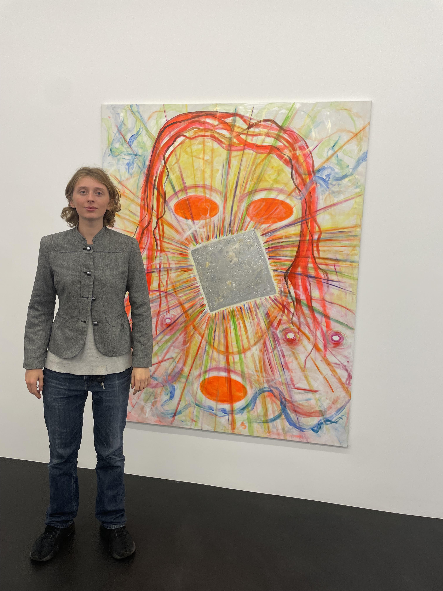
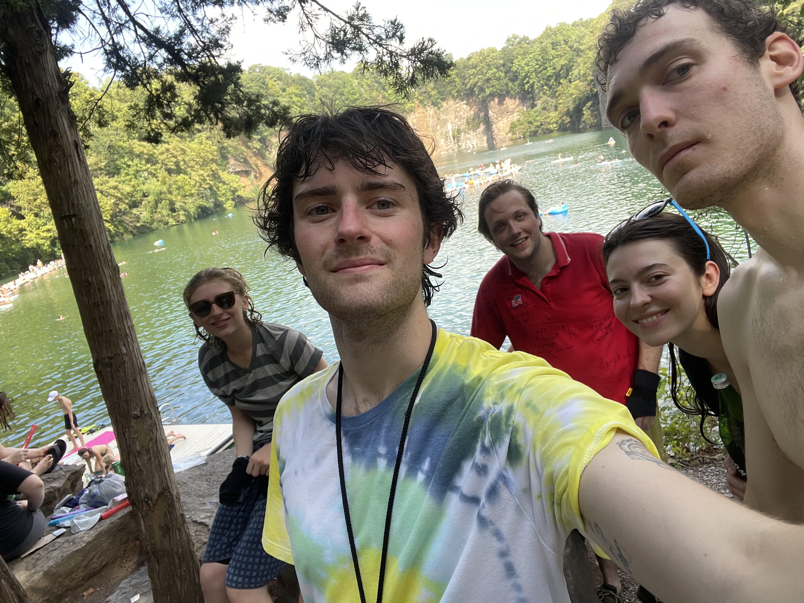

In the tail end of this past winter, while attending a Saturday night show at Williamsburg bookstore Property is Theft, I was treated to an incredible surprise. A band who I would later come to know as Reading (having seen the show poster beforehand I assumed there would be a reading) played a set that, in equal measures, delighted, bewildered, and enraptured me. I did my darndest to catch the band as many times as I could before moving out of Brooklyn at the end of the summer, and I implore you to do the same. Band members Fritz, Noa, and Justin kindly gave their time to answer some questions about how this all began and where they may go next.
When did you start playing music?
Fritz (guitar, vocals): Only when I made it to the 5th grade did I really fall in love with an instrument, none other than the ukulele.
Noa (electronics): My dad played guitar at my preschool and sang songs to all us toddlers, I’d sing along growing up. We played music together learning drum feels to loads of different songs, all different genres.
Justin (percussion): My older brother had a drum kit and I started making noise on it before I can remember.
Were you involved in any bands or other projects before Reading?
F: Not really, just bumbling with friends.
N: I was in 9bittah this winter, played music with Harlow Green growing up, [played on the] Holiday Album with Oscar Patterson and the aforementioned.
J: A few bands in high school through the school’s music program, plus a jazz combo in college.
The band webpage lists a short origin story involving a happenstance coffee shop rendezvous. Would you care to expand on how the band began, or leave it at that?
F: I think this quote effectively explains Reading from many perspectives.
N: It’s very funny but true.
J: I don’t remember this coffee shop meeting at all but it sounds plausible. I tend to
date the band’s origin to when my downstairs neighbor yelled at Fritz and me (but
then offered to hook us up with a practice space rental) for playing drums in my
bedroom past 10pm.

The group members’ origins, as listed on your website, represent both U.S. coasts, as well as Eastern Europe. Can you name any region-specific influences that show up in the music?
F: The fang-toothed grit of New York has clawed at our music in such a way.
J: (This is kind of a stretch but) Grayson is from the DMV, where Animal
Collective—my favorite band, whose influence on us I hope is legible—are from.
I understand that they were interested in the Grateful Dead (supposedly the
only sanctioned sample of a Dead song appears in
What Would I Want? Sky),
who were a huge cultural force where I grew up in San Rafael, which is where
the Dead were headquartered and where Jerry [Garcia] lived for a while. None
of us are big Dead heads, but the Dead are probably reaching us in a second-way,
via Animal Collective.
What led you to playing the resonator-style guitar?
F: Butch Anderson and a longtime family friend called Rob. I guess playing a resonator through an amp is quite a contradiction, yet the effect ends up being really sonically appealing due to the way the body sings back to its being amplified. I have been playing some electric guitar now too.
If you could play music together as a group in any place in the world, where would it be?
F: Krakow or perhaps the top of the world.
N: Krakow or perhaps Europe.
J: Krakow or perhaps Providence (Tea in Sahara).

You have a CD available for purchase at the moment. What was the recording process like for the songs featured on the release?
F: It’s actually just one song and I’m not entirely sure if the band knew I was
recording them. The texture of the percussion in the recording was really excellent
and strange and I stumbled upon it months from when the jam happened. It wasn’t
pre-meditated and I think the sound of that recording may have changed if the
group was conscious of its future.
N: The outtakes…
What’s next for Reading?
F: We are in the midst of recording almost the entirety of what we have been presenting
on stage in the format of an album. Hitting your tree top early 2027, hopefully.
And perhaps scoring a play.
J: Band dinner (soup night).